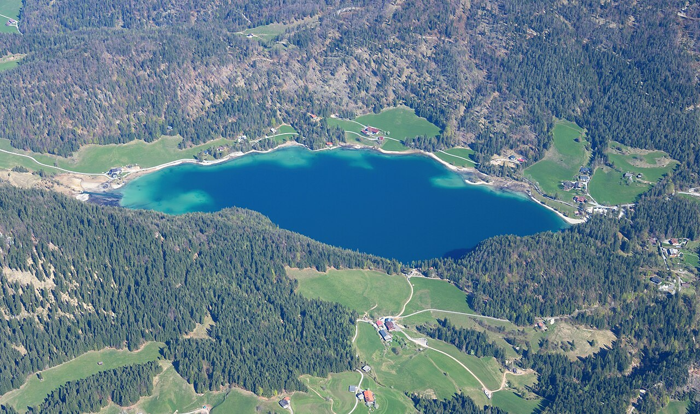

Doable anytime
Hintersteiner See
Clear turquoise water directly beneath the Wilder Kaiser. Best for a short shore walk, photographs and an outing that does not consume the day.
- From Going: 11 min · 10 km
- Onward to Forsthofgut: 50 min · 44 km
- With Rue: easy short version; the full 5.2 km loop includes rougher sections